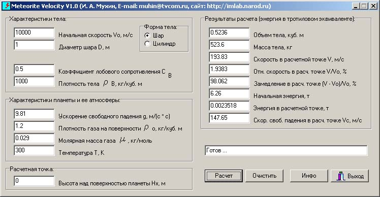
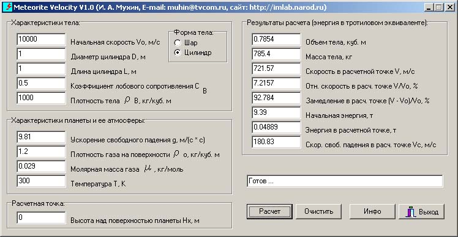

Движение тела в среде газа переменной
плотности при турбулентном обтекании.
Программа Meteorite Velocity
1. Введение
Задача движения тела в среде газа переменной плотности при турбулентном обтекании рассмотрена в применении к падению метеорита шарообразной формы, тормозящегося атмосферой планеты, а также использованию кинетического оружия из космоса по поверхности планеты (цилиндрический снаряд с большим отношением длины к диаметру и заостренными концами – "Стрелы Бога").
2. Движение тела в атмосфере с экспоненциальным ростом плотности
Сила сопротивления F (лобовое сопротивление) при больших скоростях движения тела с поперечным сечением S (миделево сечение) в газовой среде плотностью r пропорциональна квадрату скорости тела v [3]:
где CB – коэффициент лобового сопротивления тела. Он зависит от скорости тела [1], но для упрощения расчетов можно его принять постоянным (см. таблицу 2.1).
Таблица 2.1. Коэффициенты лобового сопротивления для некоторых тел разной формы.
|
Квадратная пластина, перпендикулярная направлению потока |
1.28 |
|
Диск, перпендикулярный направлению потока (короткий цилиндр) |
1.12 |
|
Куб |
1.05 |
|
Длинный цилиндр |
0.82 |
|
Шар |
0.50 |
|
Каплевидное тело |
0.04 |
|
Тело наилучшего обтекания (сигарообразное с задним заостренным концом) при длине в четыре диаметра с осью по потоку |
0.026 |
Предположим, что тело (шарообразное тело диаметром D или цилиндрическое тело диаметром D длиной L) плотностью rB входит в газообразную среду, плотность которой определяется барометрической формулой (атмосфера планеты, находящаяся под воздействием ее силы тяжести), на высоте H (вход под прямым углом – по направлению радиуса планеты):
Здесь r0 – плотность атмосферы на уровне поверхности планеты, r – плотность атмосферы на высоте H, m – молярная масса атмосферного газа, g – ускорение свободного падения, R – универсальная газовая постоянная (R ≈ 8.31 Дж/(моль ∙ К), T – абсолютная температура.
Тело входит в газообразную среду на высоте H (начало координат x = 0) и движется в направлении поверхности планеты (x = H). При этом плотность газовой среды возрастает экспоненциально по ходу движения:
Тогда в соответствии со вторым законом Ньютона [6] имеем для тела массой m:
где dv/dt – ускорение тела (t – текущее время).
Масса тела может быть вычислена через его плотность и объем. Масса шара:
Масса цилиндра:
Рассматривая скорость тела v(t) как функцию координаты x (v(x)):
имеем для шара:
и для цилиндра:
или в случае шара:
а в случае цилиндра:
Таким образом, получаем для шара:
Для цилиндра имеем:
Предположим, что ускорение свободного падения g и температура T не изменяются с высотой. Это предположение вряд ли сильно повлияет на точность расчета, особенно с учетом того, что в реальных условиях ускорение свободного падения и температура с высотой уменьшаются, взаимно компенсируя свое изменение в вышеприведенной формуле. Фактически, можно взять их отношение на уровне поверхности планеты. Полагаем коэффициент лобового сопротивления CB не зависящим от скорости. После выполнения интегрирования:
- в случае шара
- в случае цилиндра
Полагая начальную скорость v(0) = v0, имеем
(шар)
(цилиндр)
Исключая константу вычитанием одного уравнения из другого, получим:
(шар)
(цилиндр)
При H → ∞ (считаем, что атмосфера планеты простирается в бесконечность) поскольку
можно записать для шара:
и для цилиндра:
Скорость движения шарообразного тела v(x) на высоте HX = H – x над поверхностью планеты составит:
Скорость движения цилиндрического тела v(x) на высоте HX = H – x над поверхностью планеты составит:
Минимально достижимая относительная скорость при x = H (конечная минимально возможная скорость на уровне поверхности планеты vMIN = v(H)) для шара определится следующим соотношением:
и дли цилиндра:
Полагая CB = 0.5 (шар), D = 17 м, rB = 3500 кг/м3, r0 = 1.2 кг/м3 (атмосфера Земли), g = 9.81 м/с2 (ускорение свободного падения не меняется с высотой), T = 300 К, m = 0.029 кг/моль, получаем:
Т. е. замедление практически отсутствует.
Если D = 1 м, то при прочих равных условиях:
Т. е. скорость уменьшается втрое.
Полагая CB = 0.05 (длинный цилиндр), L = 1 м, rB = 20000 кг/м3 (вольфрам), r0 = 1.2 кг/м3 (атмосфера Земли), g = 9.81 м/с2 (ускорение свободного падения не меняется с высотой), T = 300 К, m = 0.029 кг/моль, получаем:
Т. е. замедление практически отсутствует.
Если тело массой m движется под действием силы тяжести mg, встречая сопротивление газовой среды, то установившаяся скорость его движения vC может быть вычислена из соотношения:
Выражая массу тела через его плотность и объем:
(шар)
(цилиндр)
получим для шара:
и для цилиндра:
Тогда установившаяся скорость свободного падения vC шарообразного тела на высоте H – x над поверхностью планеты составит:
а цилиндрического:
Эта скорость не остается постоянной, т. к. плотность атмосферы изменяется с высотой. Фактически, скорость vC уменьшается с уменьшением высоты нахождения тела над поверхностью планеты (и наоборот). Можно сделать предположение, что если тело на некоторой высоте замедляется до скорости vC, то далее оно продолжает лететь с этой скоростью. Эта высота (H – x) может быть найдена для шара из соотношения:
а для цилиндра из соотношения:
Т. е. когда при некоторой величине H – x правая часть этого соотношения уменьшится до левой его части, то далее скорость тела устанавливается равной vC.
Кинетическая энергия E тела массой m, движущегося со скоростью v, определяется формулой:
Выражая массу шарообразного тела через его плотность и объем, получаем:
Для цилиндрического тела имеем:
Кинетическая энергия шара в тротиловом эквиваленте ET (1 г = 0.001 кг тротилового эквивалента примерно соответствует 1 ккал ≈ 4180 Дж [5], соответственно 1 кт тротилового эквивалента соответствует 4.18 ∙ 1012 Дж):
Кинетическая энергия цилиндра в тротиловом эквиваленте ET:
Кинетическая энергия шара при D = 17 м, rB = 3500 кг/м3, движущегося с начальной скоростью v0 = 18 км/с, составит в тротиловом эквиваленте:
Т. к. для случая торможения в атмосфере Земли замедление тела такой массы практически отсутствует, то при его наземном взрыве выделится практически вся эта энергия.
Если диаметр шара D = 1 м, то при прочих равных условиях:
На уровне поверхности Земли скорость упадет втрое, следовательно, энергия уменьшится в девять раз – примерно до 8 т в тротиловом эквиваленте.
Кинетическая энергия цилиндра при D = 0.25 м, L = 1 м, rB = 20000 кг/м3, движущегося с начальной скоростью v0 = 8 км/с, составит в тротиловом эквиваленте:
Т. к. торможение такого тела в атмосфере Земли практически отсутствует, то при его наземном взрыве выделится практически вся эта энергия.
3. Программа Meteorite Velocity
Файл: M_Velocity10.rar (~300 Кб). Скопированный файл можно проверить на отсутствие вирусов в режиме on-line [2].
3.1. Технические характеристики
1. Требования к
компьютеру: начиная от Pentium I, рабочая частота от 100 МГц, оперативная память
от 32 Мбайт, необходимое место на жестком диске менее 5 Мбайт.
2.
Операционная система: Windows
95, Windows 98, Windows XP, Windows Vista.
3. Расчеты производятся в системе СИ
4. Ввод входных данных осуществляется с клавиатуры, вывод рассчитанных данных
производится на экран монитора.
5. Входные данные для расчета:
Начальная скорость тела v0, м/с, v0
> 0
Диаметр шара или цилиндра D, м, D > 0
Длина цилиндра
L, м, L > 0
Коэффициент лобового сопротивления CB, CB
> 0
Плотность тела
rB,
кг/м3, rB
> 0
Ускорение свободного падения g, м/с2, g > 0
Плотность газа на поверхности r0,
кг/м3, r0
> 0
Молярная масса газа
m, кг/моль,
m > 0
Абсолютная температура T, К, T > 0
Высота над поверхностью планеты HX
(расчетная точка), м, HX может быть как
положительной, так и отрицательной величиной (в некоторых случаях это может
приводить к ошибке вычислений)
6. Рассчитываемые
данные:
Объем тела, м3
Масса тела, кг
Скорость тела в расчетной точке v, м/с
Относительная скорость тела в расчетной точке, v/v0, %
Замедление тела в расчетной точке (v – v0)/v0,
%
Начальная кинетическая энергия тела в тротиловом эквиваленте, т или кт
Кинетическая энергия тела в расчетной точке в тротиловом эквиваленте, т или кт
Скорость свободного падения тела в расчетной точке vC,
м/с
7. Примерное время
расчета менее 1 с
3.2. Установка и эксплуатация программы
Для exe-файла программы, файла технического описания и инструкции по эксплуатации и файла проекта желательно создать отдельную папку и скопировать их в нее. Для удобства работы можно создать значок программы на рабочем столе. Оригинал полученной программы следует предохранять от случайной перезаписи.
После запуска программы на экране монитора появляется ее главное окно с заранее введенными пробными входными данными. Пользователь может заменить их на собственные. Переход от одного входного окошка к другому, а также между кнопками, можно делать либо с помощью мыши либо, используя клавишу табуляции. Для производства нескольких расчетов одновременно можно запустить программу необходимое число раз.
Исходные данные должны быть представлены в системе СИ с учетом принятого в операционной системе (ОС) данного компьютера формата разделителя для десятичной дроби. При разработке программы в качестве разделителя предполагается точка. Если в ОС в качестве разделителя для десятичной дроби установлена точка, то в исходных данных нужно также использовать точку (например, 0.01). Если же в ОС в качестве разделителя для десятичной дроби установлена запятая, то и в исходных данных необходимо использовать запятую (например, 0,01). При несоответствии разделителей десятичной дроби для входных данных программы и ОС на экран монитора при попытке расчета будет выводиться сообщение об ошибке. Поменять разделитель десятичной дроби в ОС Windows можно в панели управления (например, Мой компьютер – Панель управления – Язык и стандарты – Настройка – выбрать разделитель целой и дробной части).
При вводе данных в экспоненциальном формате (например, 1.67E-8 вместо 0.0000000167) необходимо использовать латинский алфавит для буквы E, при вводе русской буквы Е вместо латинской E на экран монитора при попытке расчета будет выводиться сообщение об ошибке (к цифрам это не относится).
После задания исходных данных можно начать расчет с помощью кнопки «Расчет», нажав на нее с помощью мыши, либо нажав клавишу ввода. Программа производит проверку корректности введенных данных на их соответствие возможному физическому диапазону и друг другу. Если проверка выявляет ошибку в задании входных данных, то в главном окне программы в строке готовности над кнопками появляется сообщение о необходимости внести соответствующее исправление. Если входные данные введены правильно, то программа производит вывод расчетных значений в соответствующие окошки. Их можно очистить, нажав кнопку «Очистить». Проверить правильность расчета на данном компьютере для пробных входных данных можно по главному окну программы на рис. 3.2.1 и 3.2.2. Оперативно посмотреть справочные данные можно, нажав кнопку «Инфо».

Рис. 3.2.1. Внешний вид программы Meteorite Velocity V1.0. Расчет для шара.

Рис. 3.2.2. Внешний вид программы Meteorite Velocity V1.0. Расчет для цилиндра.
Ссылки:
08.08.2017
14.10.2018
Альтернативные источники
энергии
Компьютеры и
Интернет
Магнитные поля
Механотронные системы
Перспективные разработки
Электроника и
технология